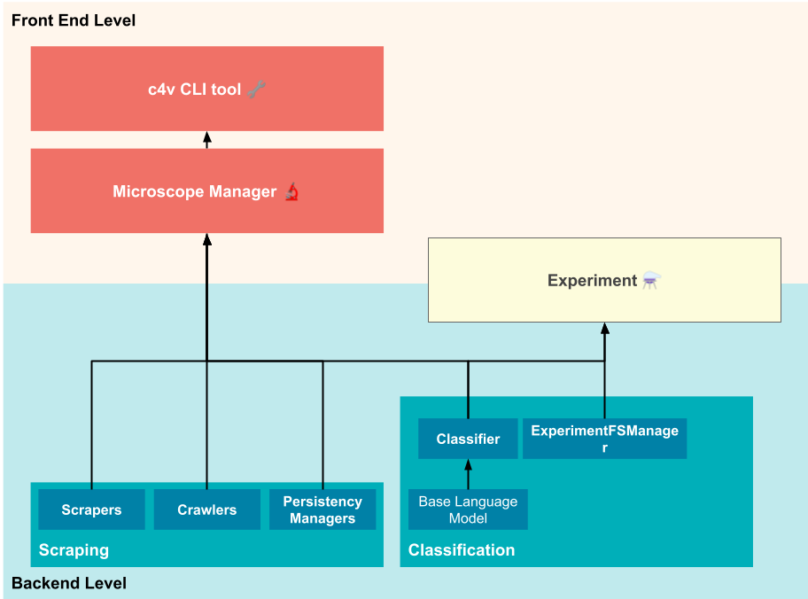

Architecture & components
The Microscope library is compound by components that can be summarized as:
- Scraper: Will scrape data from known urls for specific websites, not every website might be scrapable,
returning
ScrapedDatainstances, this is the scheme for the data expected from a page - Crawler: Will crawl new urls from specific sources, this data should be fed to the scraper at some point
- Persistency Manager: Will store data scraped by the scraper in some persistent storage, an SQLite-based manager is provided by default
- Classifier: Classifies a
ScrapedDatainstance telling if it is a public service problem or not. - Experiment: This class controls an experiment run, it's useful to manage logging and results for experiments. Also, it makes possible for every experiment to be ran in more or less the same way, making it easier to use for new comers.
- ExperimentFSManager: Simple class controlling how to experiment's filesystems are stored, enabling an unified filesystem for every experiment. You can implement a new object with the same interface if you want to provide an alternative method experiment's storage

Warning
The classifier should be more specific in the future, it should be able not only to differentiate between news talking about public services or not, but also the kind of problem itself
Scraper
The Scraper component is just a single function that receives a list of urls to scrape and manages to select the right scraper object for such url (based on its domain) or raise an error if it's not able to find any matching scraper.
Example usage
The next examples will show you how to use the scraper to scrape a list of urls, handle a possible non-valid url and filter out urls that may not be scrapable.
Scraping multiple urls with the Manager object
The easiest way to scrape is using the manager object as follows:
import c4v.microscope as ms
# Creates the default manager
m = ms.Manager.from_default()
urls = [
"https://primicia.com.ve/mas/servicios/siete-trucos-caseros-para-limpiar-la-plancha-de-ropa/",
"https://primicia.com.ve/guayana/ciudad/suenan-con-urbanismo-en-core-8/"
]
# Output may depend on your internet connection and page availability
for result in m.scrape(urls):
print(result.pretty_repr(max_content_len = 100))
Scraping a single url
import c4v.microscope as ms
m = ms.Manager.from_default()
url = "https://primicia.com.ve/mas/servicios/siete-trucos-caseros-para-limpiar-la-plancha-de-ropa/"
# Output may depend on your internet connection and page availability
result = m.scrape(url)
print(result.pretty_repr(max_content_len = 100))
Removing non-scrapable urls
Here we can see how to separate scrapable urls from non-scrapable ones. It may be helpful to know which urls can be processed
import c4v.microscope as ms
m = ms.Manager.from_default()
urls = [
"https://primicia.com.ve",
"https://elpitazo.net",
"https://supernotscrapable.com"
]
assert m.split_non_scrapable(urls) == (urls[:2], urls[2:])
TODO
add more useful examples
Creation
You can create a new scraper in order to support scraping for new sites. More details about this in "creating a scraper"
Crawler
TODO
Creation
You can create a new crawler in order to support exploring new urls for new sites. More details about this in "creating a crawler"
Persistency Manager
TODO
Creation
You can create a new Persistency Manager object in order to support new ways of storing data. More details about this in "creating a persistency manager"
Experiment
TODO
ExperimentFSManager
TODO